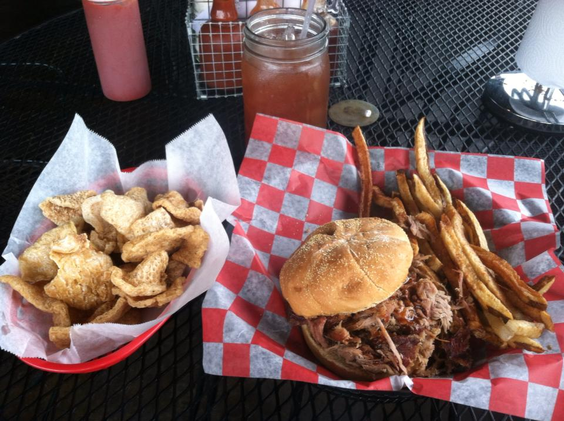

Amazing Bar-B-Que
Live Music!
Full Bar!

Squealer's Hickory Smoked Bar-B-Que has been Meridian's favorite BBQ since we opened our doors back in 1998. We love our hometown and we try our best to make our customers happy and keep them coming back again and again!
We hope you will stop in and try some of our most popular items, like our juicy pulled pork, tender smoked ribs, or our homemade bannana pudding. One visit and we are certain you will be back for more.